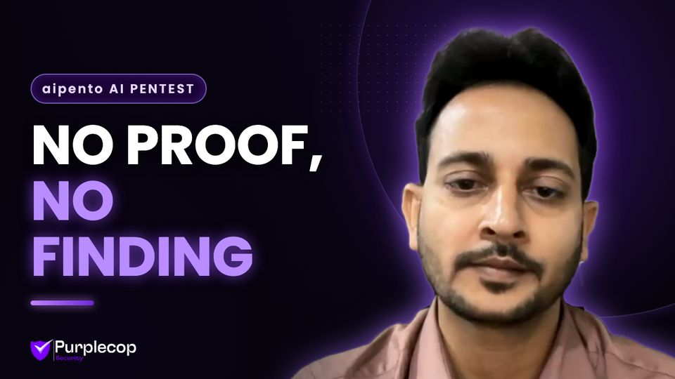
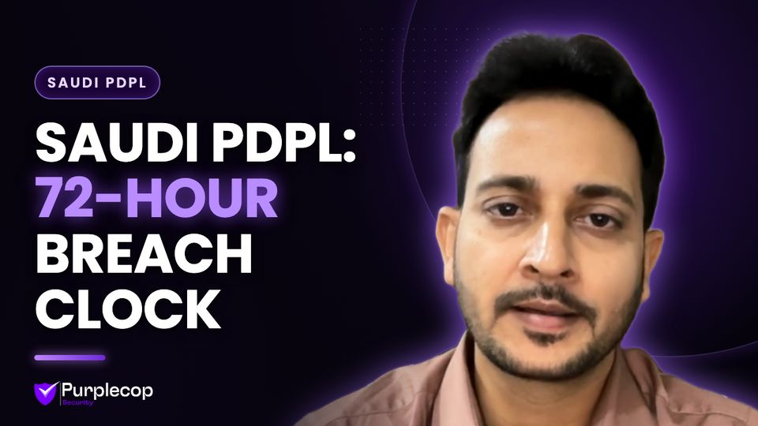
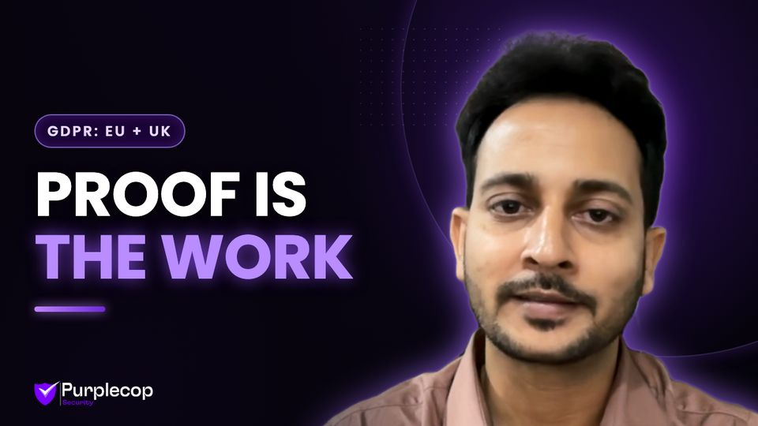

Governance, risk and compliance
Controls mapped once and tested against many frameworks, with evidence an auditor can sample.
- ISO 27001
- SOC 2
- GDPR
- DPDP Act
- SOX 404 / ITGC
- CMMI
/ Founder & CEO · Purplecop Security
Compliance has to stand up in front of an auditor.
I have spent more than a decade on the side of security that gets tested: controls, evidence and risk. Today I run Purplecop Security and I work in the open on the standards for AI governance and post-quantum readiness.
5,464
LinkedIn followers
LinkedIn profile, 12 Nov 2026
ISO 27001
Lead Auditor
LinkedIn headline, 20 Aug 2026
Mar 2024
Purplecop One, Mar 2024 to now
LinkedIn experience, 20 Aug 2026
/ How I work
I read standards the way an auditor does: clause by clause. Each one comes back to a single question: what proves the control is working?
/ My story
The route in was compliance work inside large companies, then two companies of my own.
2006 to 2012
A B.Com. in Accounting and Finance at Doctor Ram Manohar Lohia Awadh University (2006 to 2009), then an MBA in Finance at Jamia Hamdard (2010 to 2012).
Source: LinkedIn education, 20 Aug 2026
Mar 2012 to Oct 2012
Product Executive at Shriram Transport Finance: commercial vehicle finance, credit analysis, and field inspection to check that a customer was who they said they were.
Source: LinkedIn experience, 20 Aug 2026
Oct 2012 to Feb 2016
Senior Compliance Analyst: vendor payables and compliance, audits across the EMEA region, and the quarterly SOX 404 attestations for EMEA Accounts Payable.
Source: LinkedIn experience, 20 Aug 2026
Mar 2016 to Mar 2019
Senior Compliance Specialist with Jones Lang LaSalle at Google India: SOX 404 and IT general controls, third-party risk and vendor audits.
Source: LinkedIn experience, 20 Aug 2026
Jul 2019 to Jan 2024
CEO of an EdTech company training professionals in cybersecurity, IT audit, compliance and risk management. My LinkedIn entry puts it at 10,000+ professionals trained.
Source: LinkedIn experience, 20 Aug 2026
Mar 2024 to now
Founder and CEO. I stay close to product, client delivery and go-to-market for the GRC platform.
Source: LinkedIn experience, 20 Aug 2026
Credential
I hold the Lead Auditor qualification, and I read standards the way an auditor does: clause by clause.
Source: LinkedIn headline, 20 Aug 2026
Now
A public record of corrections to GRC, AI-security, supply-chain and post-quantum projects, from Google and Microsoft to OWASP and the OSSF. The live ledger is below.
Source: github.com/tausif-ahmed-guardian
/ What I work on
Each one comes back to a single question: what proves the control is working?
Controls mapped once and tested against many frameworks, with evidence an auditor can sample.
Turning AI obligations into controls, owners and records, and looking at the risks in LLM and agent systems.
Start with an inventory of where cryptography lives, then plan the migration with owners and dates.
Purplecop Security: cybersecurity and GRC company founded in 2020, present in the USA, India and Dubai. Per purplecop.com, 12 Nov 2026.
/ Products
Descriptions are taken from the product sites, read on 12 Nov 2026.
Purplecop One / GRC
Frameworks, controls, evidence, risk, vendors, audit and awareness, in one product.
Part of Purplecop One: three products in one ecosystem, one for each management system, on one identity, one control library and one evidence store.
purplecop.comSource: purplecop.com, 12 Nov 2026.
Purplecop One / Privacy
Privacy information management, DPDPA-native for India, with privacy laws from other countries covered too.
Part of Purplecop One: three products in one ecosystem, one for each management system, on one identity, one control library and one evidence store.
purplecop.comSource: purplecop.com, 12 Nov 2026.
Purplecop One / AI management
Model inventory, AI risk, AI controls and the evidence that an AI system is governed.
Part of Purplecop One: three products in one ecosystem, one for each management system, on one identity, one control library and one evidence store.
purplecop.comSource: purplecop.com, 12 Nov 2026.
AI pentesting
An autonomous AI penetration testing platform. It attacks your own staging app the way an AI attacker would, and reports only the weaknesses it can reproduce.
aipento.comSource: aipento.com, 12 Nov 2026.
/ Purplecop · GRC Practice Lab
Purplecop's GRC Practice Lab is a full GRC workspace with real controls, real registers and real audits, where mistakes cost nothing. Free with an account. Built by the Purplecop team, led by co-founder and CPTO John B Joseph.
Figures as published on johnbjoseph-cybersec.github.io (read 15 Nov 2026), from the lab's Google Analytics. Lab: grclab.purplecop.io.
/ In the open
Corrections and additions to open-source projects, checked against the primary source. Every entry links to its public thread, and its status is read from that thread, not from me.
LedgerMerged first, then newest
14 Nov 2026
docs(readme): point the pipx link at the current install page
14 Nov 2026
Fix dead toolhive-rfcs and chainsaw links in docs
14 Nov 2026
docs: fix relative links in .github/CONTRIBUTING.md
14 Nov 2026
docs(readme): fix dead links to the CI/CD and module docs
14 Nov 2026
[DOCS]: RFC section citations for DCR update/delete (RFC 7592) and OWS (RFC 7230 3.2.3)
14 Nov 2026
Fix broken links in CONTRIBUTING.md and the pnpm contract doc
14 Nov 2026
Replace dead links with Wayback copies on SQL injection, XPath, brute force and FAQ pages
14 Nov 2026
Replace dead links with Wayback copies on EL Injection and Unrestricted File Upload pages
14 Nov 2026
docs(owasp-pr): fix dead Snyk ToxicSkills and Aikido slopsquatting links
14 Nov 2026
docs(pikit): fix USENIX Security 2024 paper link
14 Nov 2026
docs(compliance): correct NIST AI 600-1 section numbers
14 Nov 2026
docs: fix dead architecture docs link in CONTRIBUTING.md
14 Nov 2026
docs: correct EU AI Act Article 50 scope and retention example
14 Nov 2026
docs(wire): correct RFC 8656 section references in TURN comments
14 Nov 2026
docs(cli): point the tool-contract link at mcp-tool-contracts.md
14 Nov 2026
docs: fix broken relative links in AGENTS.md and SCAN_COVERAGE.md
14 Nov 2026
docs: fix dead Trend Micro link in RESEARCH-REFERENCES.md
14 Nov 2026
docs(FAQ): NIST RMF should read NIST AI RMF
14 Nov 2026
Fix CWE-682 and CWE-134 titles and the CWE-595 link in Related Guidelines
13 Nov 2026
FAQ.md cites CWE-1426 as the prompt injection weakness; prompt injection is CWE-1427
12 Nov 2026
Docs say ML-KEM-768 is "equivalent to AES-256"; NIST security category 3 corresponds to AES-192
12 Nov 2026
EU AI Act penalty figures in ai_act_classifier.py do not match Article 99
Every public issue and pull request I have opened in someone else's repository, read from GitHub and rebuilt every two hours. Merged comes only from GitHub's own merged flag; closed-unmerged items are left out.
Ledger as of 15 Nov 2026, read from GitHub (account tausif-ahmed-guardian) and rebuilt every two hours.
/ Writing
Advisories and incidents, with the primary source in the first comment.
12 Nov 2026
Notion says a security incident at Fireworks AI, an AI infrastructure provider it used, exposed Notion AI chat transcripts from fewer than 1% of its workspaces.
2 Nov 2026
CISA added CVE-2026-97229, in GitLab Community and Enterprise Edition, to its Known Exploited Vulnerabilities catalog on 29 Oct, based on evidence of active exploitation.
2 Nov 2026
CERT-In advisory CIAD-2026-0050 (21 Oct) covers eight eMudhra intermediate CA certificates. Their private keys were generated with too little randomness, so they could be worked out from the public keys.
1 Nov 2026
CERT-In has issued a critical advisory for MSMEs, CIAD-2026-0052 (22 Oct), on two PHP flaws it calls PHP2Shell (CVE-2026-109618 and CVE-2026-109619).
/ Videos
Publishing on YouTube from 16 Nov
SOC 2 program

aipento AI pentest
ISO 27001 program

Saudi PDPL

GDPR: EU + UK
Purplecop Privacy
/ Newsletter
A short read on GRC, AI governance, AI security, privacy and post-quantum readiness, with one story explained properly. The name is a working title and may change.
Follow on LinkedInHandle: tausif-ahmed-guardian
/ Links
Everything on this page can be checked at these sources.